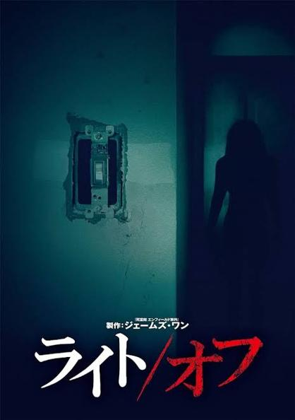

「ライト/オフ」を観た。タイトルにスラッシュ入ってるの今気づいた。 これ、ジャンプスケアでびっくりするのを除いては全然怖くない。映画としては普通に面白いと思う。
怪異の正体は「ダイアナ」という人物で、幽霊に近い存在と言えるだろう。かつては実在した人物で、ソフィーという鬱を患っている人物とお互い子供の頃に病院で知り合った。今は当時から二十数年くらい？経っている。ダイアナは光を浴びられない病で、ソフィーと知り合った後に事故で死亡した。ダイアナはソフィーに執着しており、ソフィーを奪おうとする人物に加害する。ソフィーを媒介にして実体を召喚しているようなイメージといっていいだろう。
この映画が怖くない理由はシンプルで、ダイアナの行動原理がわかりやすいからだ。ダイアナはソフィーに依存しており、ソフィーの夫や、ソフィーの鬱を治すそうとする（そして、精神的に安定させダイアナを封じようとする）娘を殺そうとする。このように、怪異の目的は何で、次にどのような行動を取るかをこちらが想像できるようになるとかなり怖さが減る。
「黒い家」は、ストーカーが何をしたいのか分からない間の怖さと、何がしたいのかが明らかになったうえでのバトルシーンは、怖さの質が全く違う。そんなような感じがホラーにはあると思う。
後はまあ、ダイアナがかなり物理特化型なのも怖さを抑えていた。明らかにこの世のものではないのに、殴ったり捕まえたりしてくるタイプなので、イマイチ謎の存在になれていなかった。
ホラーにも色々あって、何が怖いのが（何を観客は怖がりたいのか）が色々あるから難しいんだよな。私は未だに、自分がどんなホラーが好きなのか言語化できていない。これに何年も苦労している。